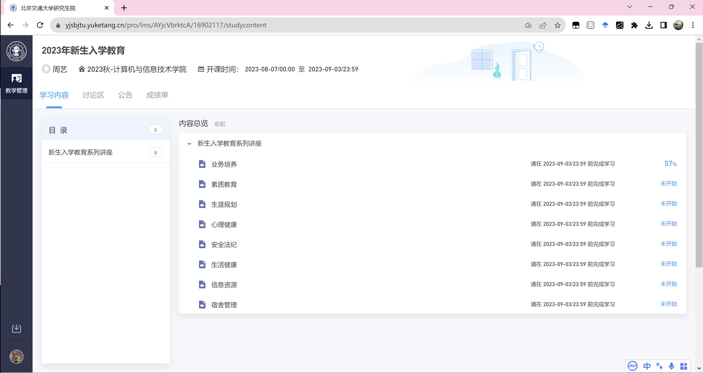
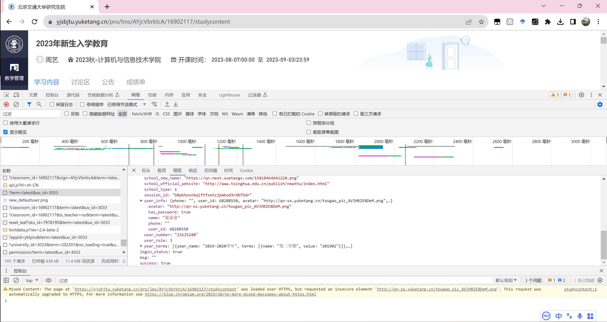
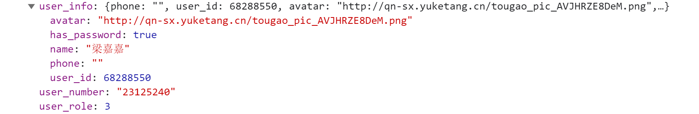
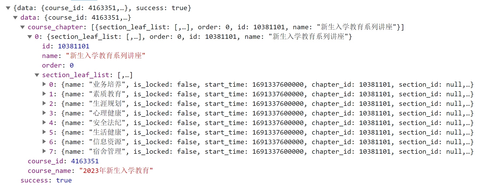
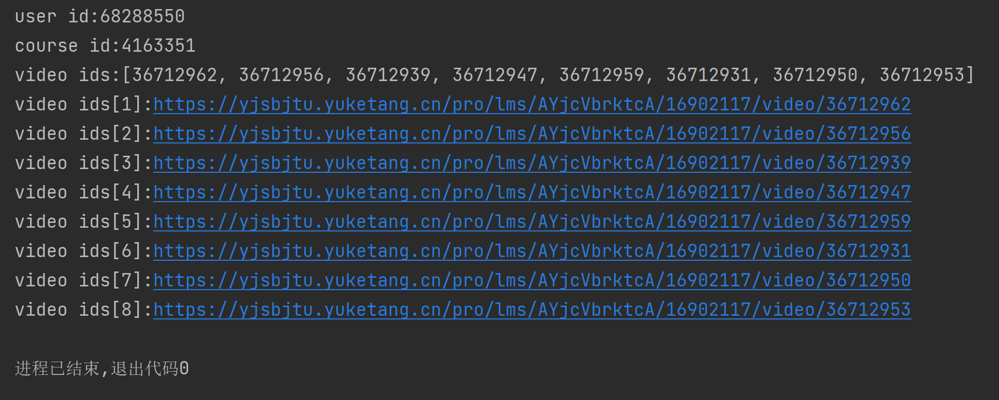
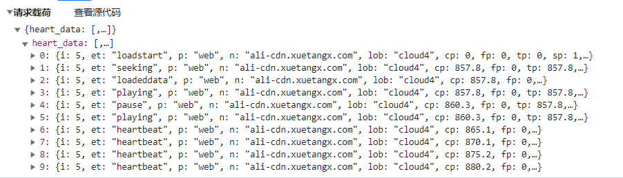
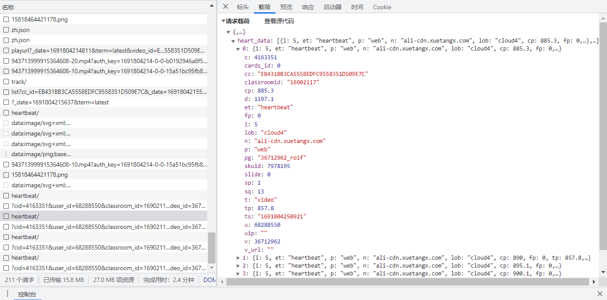
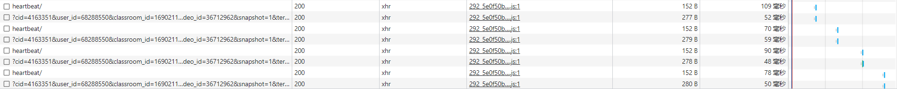
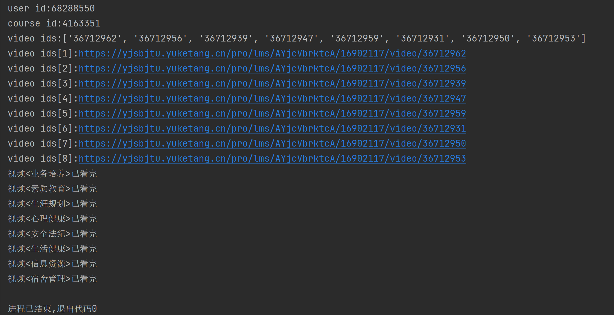

近期完成了一个名为 YuketangAutoplay 的项目，旨在通过 Python 的网络编程技术，实现了自动观看雨课堂网课的功能。但请注意几点：
- 敬重学校/平台规则： 该项目仅供参考学习，强烈鼓励大家遵循学校规则和道德准则。遵循平台规章制度，维护平台生态的健康。
- 仅限学习和探索： 该项目仅用于学术和技术探索目的，并不鼓励将这种自动化技术用于不正当用途，或者侵犯他人的权益。
- 尊重创作和知识产权：项目不侵犯任何人的创作和知识产权。看过或使用过的第三方资源包括：
雨课堂网课自动播放
https://github.com/EricZhang615/AutoYuketang
https://github.com/f2quantum/AutoYuketangforHIT
我相信通过透明地分享和交流，我们可以共同促进技术的良性发展，并在遵循法律和伦理原则的前提下，充分发挥创造力。谢谢您的理解和支持！
课程地址：https://yjsbjtu.yuketang.cn/pro/lms/AYjcVbrktcA/16902117/studycontent
https://：协议部分，表明链接使用的是HTTPS安全协议进行通信。yjsbjtu.yuketang.cn：域名部分，指向了一个网站或服务的主机名。/pro/lms/AYjcVbrktcA/16902117/studycontent：路径部分，指示了网站上的具体位置。可能的含义如下：
/pro：产品（Product）。/lms：学习管理系统（Learning Management System），表明这是与学习和课程管理相关的内容。/AYjcVbrktcA：用于身份验证或授权的签名或标识符。/16902117：教室的标识符。/studycontent：学习内容或课程资料的部分。
相关id获取

用户 id
https://yjsbjtu.yuketang.cn/edu_admin/get_user_basic_info/?term=latest&uv_id=3033


学校id
university_id
教室id
classroom_id
视频id && 课程id
https://yjsbjtu.yuketang.cn/mooc-api/v1/lms/learn/course/chapter?cid=16902117&sign=AYjcVbrktcA&term=latest&uv_id=3033

举例
https://yjsbjtu.yuketang.cn/pro/lms/AYjcVbrktcA/16902117/video/36712962
获取资源入口
1
2
3
4
5
6
7
8
9
10
11
12
13
14
15
16
17
| import requests
import json
university_id = '3033'
classroom_id = '16902117'
sign = 'AYjcVbrktcA'
term = 'latest'
headers = {
'user-agent': 'Mozilla/5.0 (Windows NT 10.0; Win64; x64) AppleWebKit/537.36 (KHTML, like Gecko) Chrome/115.0.0.0 Safari/537.36',
'cookie': '',
'referer': f'https://yjsbjtu.yuketang.cn/pro/lms/{sign}/{classroom_id}/studycontent',
'university-id': university_id,
'xtbz': 'cloud'
}
base_url = 'https://yjsbjtu.yuketang.cn'
|
获取用户 ID
1
2
3
4
5
6
7
8
9
10
11
12
13
| def get_user_id():
"""
获取用户ID并存储
:return: 用户ID
"""
user_url = f'{base_url}/edu_admin/get_user_basic_info/?term={term}&uv_id={university_id}'
response = requests.get(user_url, headers=headers)
response.encoding = response.apparent_encoding
data = json.loads(response.text)['data']
user_info = data['user_info']
user_id = user_info['user_id']
return user_id
|
获取视频 IDS 和课程 ID
1
2
3
4
5
6
7
8
9
10
11
12
13
14
15
16
17
| def get_video_ids_and_course_id(classroom_id):
"""
获取需要观看课程 ID 和视频的 ID 集合
:param classroom_id: 教室id
:return: 课程ID,视频 ID 集合
"""
chapter_url = f'{base_url}/mooc-api/v1/lms/learn/course/chapter?cid={classroom_id}&sign={sign}&term={term}&uv_id={university_id}'
response = requests.get(chapter_url, headers=headers)
response.encoding = response.apparent_encoding
data = json.loads(response.text)['data']
course_id = data['course_id']
video_ids = [section_leaf['id']
for chapter in data['course_chapter']
for section_leaf in chapter['section_leaf_list']
]
return course_id, video_ids
|
视频 URL 列表
1
2
3
4
5
6
7
8
9
10
| def get_video_urls(video_ids):
"""
获取视频url列表
:param video_ids: 视频id列表
:return: 视频url列表
"""
url_head = f'{base_url}/pro/lms/{sign}/{classroom_id}/video/'
video_urls = [f'{url_head}{vid}' for vid in video_ids]
return video_urls
|
结果打印
1
2
3
4
5
6
7
8
9
10
11
| user_id = get_user_id()
course_id, video_ids = get_video_ids_and_course_id(classroom_id)
video_urls = get_video_urls(video_ids)
print(f'user id:{user_id}')
print(f'course id:{course_id}')
print(f'video ids:{video_ids}')
for i, video_url in enumerate(video_urls):
print(f'video ids[{i + 1}]:{video_url}')
|

模拟观看
心跳包（Heartbeat）是计算机网络中的一个术语，它是指在通信过程中周期性地发送的小型数据包，用于维持通信连接的状态和活性。心跳包的主要目的是检测通信链路是否仍然可用，以及确保连接没有断开。心跳包通常由一个设备（通常是客户端）定期地向另一个设备（通常是服务器）发送。服务器在接收到心跳包后，可以回复一个确认响应，表示连接是正常的。如果一段时间内没有收到心跳包或确认响应，系统可以判定连接已经断开，并采取相应的处理措施，比如重新连接、重新启动等。
heart_data: 这是一个列表，包含了多个心跳包事件。

单个心跳包，以第三个heartbeat为例：

| 参数 |
含义 |
值 |
| c |
课程ID |
4163351 |
| cards_ed |
固定设置为0 |
0 |
| cc |
每个视频的特定参数 |
EB431BB3CA5558EDFC9558351D509E7C |
| classroomid |
教室ID |
16902117 |
| cp |
当前播放时长 |
885.3 |
| d |
总时长 |
1197.1 |
| et |
心跳包类型 |
“heartbeat” |
| fp |
视频起始播放位置 |
0 |
| i |
固定设置为5 |
5 |
| lob |
固定设置为”cloud4“ |
“cloud4” |
| n |
固定设置为”ali-cdn.xuetangx.com“ |
“ali-cdn.xuetangx.com” |
| p |
固定设置为”web“ |
“web” |
| pg |
视频id_随机字符串 |
“36712962_ro1f” |
| skuild |
SKU ID |
7978195 |
| slide |
固定设置为0 |
0 |
| sp |
播放速度 |
1 |
| sq |
心跳包序列号 |
13 |
| t |
固定设置为”video“ |
“video” |
| tp |
上一次看视频的播放位置 |
857.8 |
| ts |
时间戳，标识事件发生的时间戳 |
“1691804250921” |
| u |
用户ID |
68288550 |
| uip |
固定设置为”“ |
“” |
| v |
视频ID |
36712962 |
| v_url |
固定设置为”“ |
“” |

流程如下：
- loadstart --> seeking --> loadeddata --> play --> playing --> heartbeat --> … —> heartbeat (size(heartbeat)=10) [发送]
- –> heartbeat --> heartbeat --> … —> heartbeat (size(heartdata)=10) [发送]
- –> heartbeat --> heartbeat --> … —> heartbeat (size(heartdata)=10) [发送]
- –> heartbeat --> heartbeat --> … —> heartbeat (size(heartdata)=10) [发送]
- …
- –> pause --> videoend [发送]
辅助函数
1
2
3
4
5
6
7
8
9
10
11
12
13
14
15
16
17
18
19
20
21
22
23
24
25
26
27
28
29
30
31
32
33
34
35
36
37
38
39
40
41
42
43
| def get_video_info(video_id):
'''
获取视频部分信息
:param video_id: 视频 ID
:return: 包含视频 SKU ID, ccid 和视频名称的元组
'''
video_info_url = urls.get('video_info_url').format(base_url=base_url,
classroom_id=classroom_id,
video_id=video_id,
sign=sign, term=term,
university_id=university_id)
video_info = requests.get(video_info_url, headers=headers)
video_info.encoding = video_info.apparent_encoding
data = json.loads(video_info.text)['data']
sku_id = data['sku_id']
cc = data['content_info']['media']['ccid']
video_name = data['name']
return sku_id, cc, video_name
def get_video_len(video_id):
'''
获取视频长度
:param video_id: 视频 ID
:return: 视频时长（以秒为单位）
'''
video_play_url = urls.get('video_play_url').format(base_url=base_url,
_date=str(int(time.time() * 1000)),
video_id=get_video_info(video_id)[1])
video_play = requests.get(video_play_url, headers=headers)
video_play.encoding = video_play.apparent_encoding
try:
video_play = json.loads(video_play.text)['data']['playurl']['sources']['quality10'][0]
except:
video_play = json.loads(video_play.text)['data']['playurl']['sources']['quality20'][0]
cap = cv2.VideoCapture(video_play)
if cap.isOpened():
fps = cap.get(5)
framenum = cap.get(7)
duration = int(framenum / fps)
return duration
else:
return 0
|
心跳包
1
2
3
4
5
6
7
8
9
10
11
12
13
14
15
16
17
18
19
20
21
22
23
24
25
26
27
|
template = {
'c': course_id,
'cards_ed': 0,
'cc': cc,
'classroomid': classroom_id,
'cp': 0,
'd': d,
'et': '',
'fp': 0,
'i': 5,
'lob': 'cloud4',
'n': 'ali-cdn.xuetangx.com',
'p': 'web',
'pg': video_id + '_ro1f',
'skuid': sku_id,
'slide': 0,
'sp': 1,
'sq': 0,
't': 'video',
'tp': 0,
'ts': int(time.time() * 1000),
'u': user_id,
'uip': '',
'v': video_id,
'v_url': ''
}
|
过程
1
2
3
4
5
6
7
8
9
10
11
12
13
14
15
16
17
18
19
20
21
22
23
24
25
26
27
28
29
30
31
32
33
34
35
36
37
38
39
40
41
42
43
44
45
46
47
48
49
50
51
52
53
54
55
56
| rate_url = urls.get('rate_url').format(base_url=base_url,
course_id=course_id,
user_id=user_id,
classroom_id=classroom_id,
video_id=video_id,
university_id=university_id)
while True:
rate = requests.get(rate_url, headers=headers)
rate.encoding = rate.apparent_encoding
rate = json.loads(rate.text)[video_id]['completed']
if rate == 1:
print(f'视频<{video_name}>已看完')
break
else:
requests.post(heartbeat_url, headers=headers, data=json.dumps({"heart_data": []}))
heart_data = []
for etype, sq in [('loadstart', 1), ('seeking', 2), ('loadeddata', 3), ('play', 4), ('playing', 5)]:
data = template.copy()
data['et'] = etype
data['sq'] = sq
heart_data.append(data)
sq = 6
for i in range(0, d, 5):
hb = template.copy()
hb['et'] = 'heartbeat'
hb['cp'] = i
hb['sq'] = sq
heart_data.append(hb)
sq += 1
if len(heart_data) == 10:
send = requests.post(heartbeat_url, headers=headers, data=json.dumps({'heart_data': heart_data}))
try:
rate = requests.get(rate_url, headers=headers)
rate = json.loads(rate.text)
percentage = float(rate[video_id]['rate']) * 100
print('{} 观看进度:{.2f}%'.format(video_name, percentage))
except:
pass
heart_data.clear()
time.sleep(1)
for etype in ['heartbeat', 'pause', 'videoend']:
data = template.copy()
data['et'] = etype
data['cp'] = d
data['sq'] = sq
heart_data.append(data)
requests.post(heartbeat_url, headers=headers, data=json.dumps({'heart_data': heart_data}))
|
结果
已经运行完的结果，后面还是重新看了一遍~😁（温故而知新）

源代码地址
👉项目地址